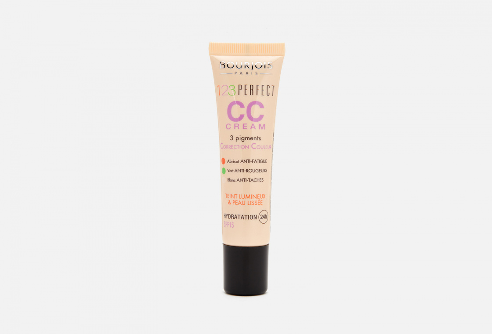
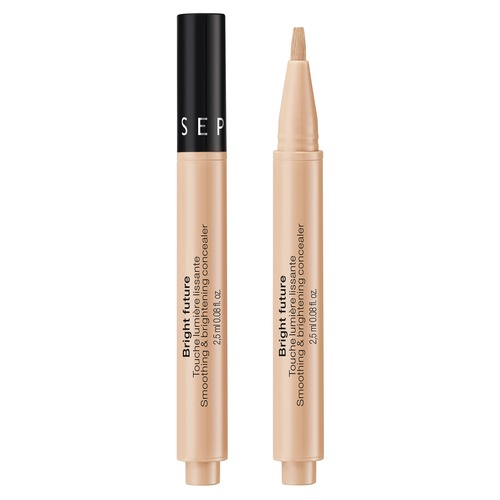

База для макияжа

CC крем
CC-крем относится к той привлекательной категории тональных средств, которые оказывают не только декоративный, но и уходовый эффект. Как правило, такие кремы хорошо увлажняют кожу, выравнивают рельеф и тон, защищают от солнца, некоторые версии даже помогают бороться с признаками старения. За аббревиатурой CC, которую следует читать, как и имя одного из главных героев «Санта-Барбары», Си-Си Кепвелла, скрывается фраза Color Correction («цветовая коррекция»). Второй вариант расшифровки названия – Control Color («контроль цвета») – передает тот же самый смысл.СС-кремы имеют более легкую и водянистую текстуру, проще растушевываются
ВВ крем
BB-крем – это универсальное средство, которое одновременно скрывает недостатки кожи и ухаживает за ней. Этот тип косметических средств появился не так давно, но произвел настоящую бьюти-революцию. BB-крем сочетает свойства тонального и дневного кремов, выполняя одновременно и декоративные, и уходовые функции: он корректирует тон лица и скрывает мелкие недостатки, а также увлажняет и питает кожу, заживляет мелкие воспаления. Главные свойства BB-крема:Главное свойство BB-крема: маскирует темные пятна и выравнивает тон кожи.

Консилер
Базовое определение звучит так: консилер – это средство для маскировки локальных несовершенств кожи. Прообраз консилера появился в 1928 году, когда американская художница и химик Лидия О’Лири создала тональное средство, чтобы скрыть большое родимое пятно на лице.Средство справляется с этой задачей на «отлично», но на самом деле «фронт работ» гораздо шире. Консилер поможет скрыть пигментные пятна и красноту кожи, сгладить морщинки и расширенные поры, выровнять поверхность лица и затонировать мелкие сосудистые звездочки.
Консилеры часто путают с корректорами, а многие до сих пор убеждены, что это одно и то же. Эти средства, действительно, иногда оказываются взаимозаменяемы, потому что корректор также относится к категории средств для маскировки несовершенств кожи.